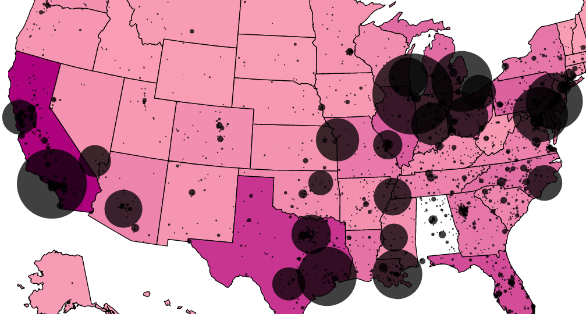
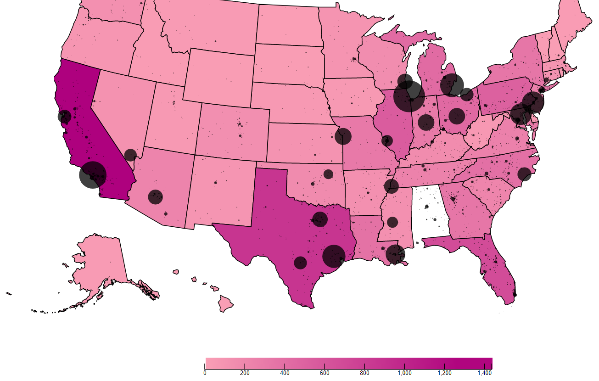
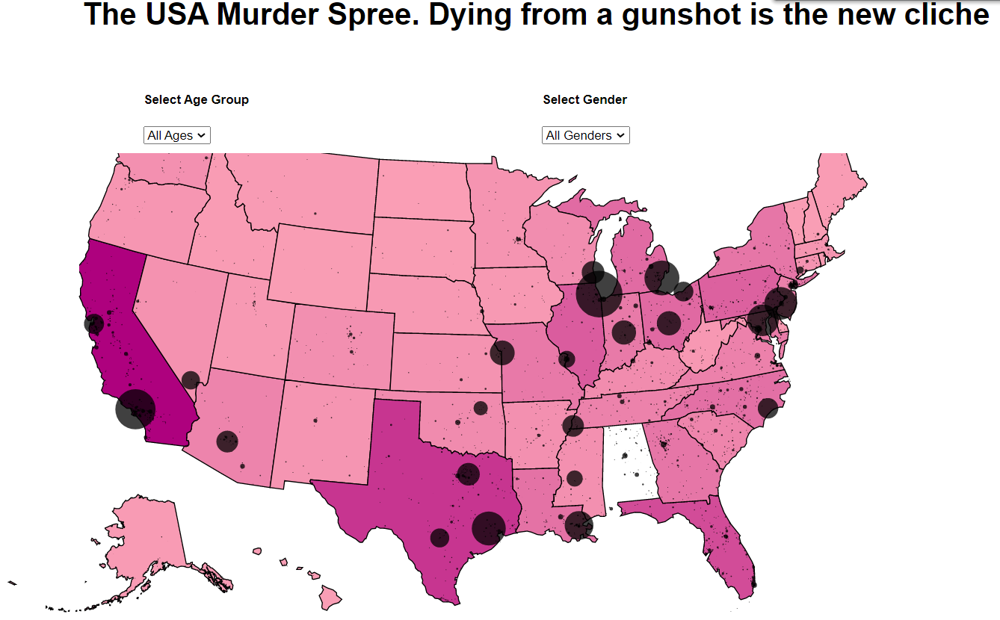

The size of the bubble corresponds to more number of deaths. By increasing the radius of the bubble, we can see that the bubbles cover a large are of the US map, which has the possibilty to trick users.
Especially considering the Mid-West and Illinois, where almost all of the Mid-West is covered by bubbles.
While this isn't the best trick to fool people, if there's no reference available for the size of the bubble, peple won't be able to make out the actual statistics, while the less observant may believe it.

By increasing the color of the min range of deaths, it confuses users at first glance since the entire map is covered in a dark color.
It misrepresents the number of actual people who've died to gunshots. While this trick is not easily spotted, if users pay special attention to read the markings on the dcale, they would realize the range of death is much alrger than expected.
For full effect, changing the numbers on the scale would male it even more difficult for users to detect what the issue is, without consulting the documentation and verifying the veracity of the source data.

Headlines and/or Titles are the first thing a person sees when reading any article, website, or news banner.
It serves two purposes, one which is to allude to the user what the topic might be about, and in some cases also help to briskly summarize the article, albeit with the lack of some details.
So making a confusing headline, especially when it appears that the visualization supports the title is great for the propogation of misinformation. As can be observed, American citizens are seemingly at risk of gun-related crimes based on the viz
,
and the title also lands the final blow and helps to confuse the authors further.
The visualization was made using the combination of 2 maps: a choropleth and a bubble map.
The choropleth gives us state level information regarding number of deaths in each state normalized by the population in each state.
By normalizing data, we can more accurately represent the data to the users.
The sequential color scheme used for the choropleth is color-blind friendly and sourced from colorbrewer.
In trying to stay in line with the users mental model, I’ve chosen to keep dark color as more number of deaths and light colors
less number of deaths.
The bubble map gives us city level information regarding the number of deaths in each city.
The size of the bubble gives an indication of the number of deaths.
The larger the bubble size, the more deaths have occurred in that city, and the smaller the bubble the less number of deaths that have occurred.
As per Tufte’s principles, this combination of maps gives users more interpretability of the situation.
Users can filter the data by gender and age group which gives users more details and information regarding the context
of the visualization. Users can focus on specific subsets of the population to understand how gun deaths have impacted them.
The visualization has a tooltip that displays a bar graph of number of deaths by gender and by age group for easier comparison.
All these components are affected by the filters which are set.
The goal for the black hat visualization was to ensure the propogation of misinformation. It's better to be subtle than get caught
red-handed and have the narrative turn against you. The more blatant the misinformation, the more obvious is the fallacy of the black hat visualization.
Which is why it's important to understand the subtle ways in which users can be confused or misdirected, by manipulating the users visual perception and taking advantage of them.
As can be observed from this black hat visualization, simply increasing the radius on the bubbles gave the effect of the Mid-West facing heavy gunfire.